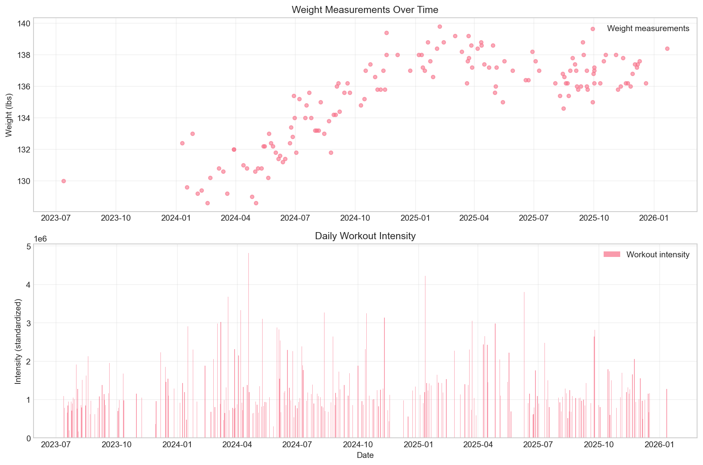
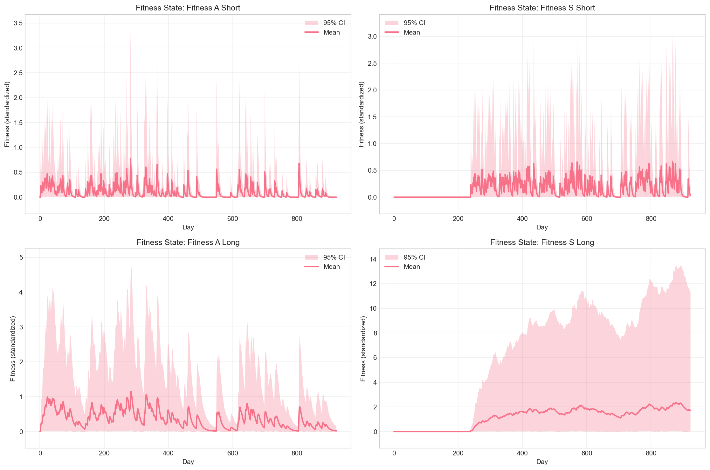
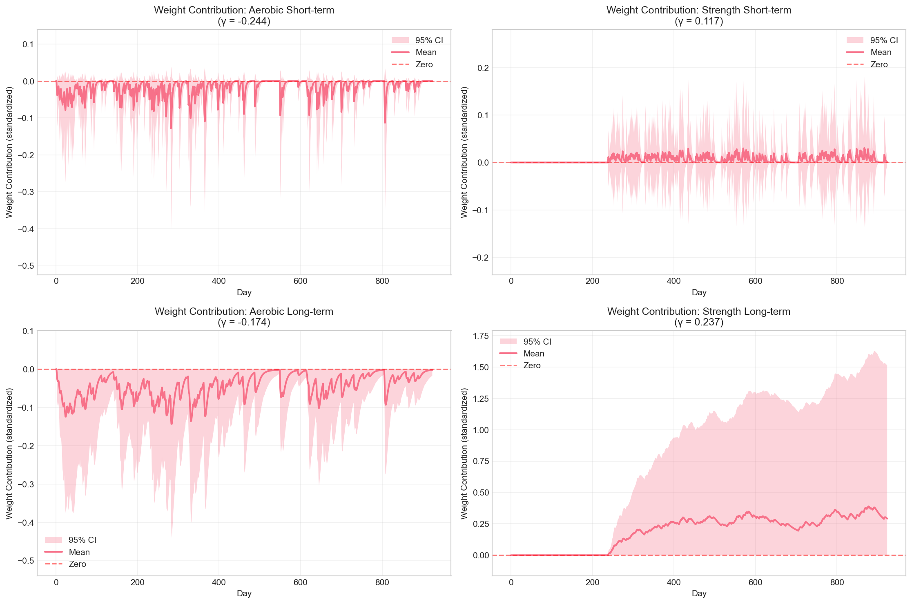
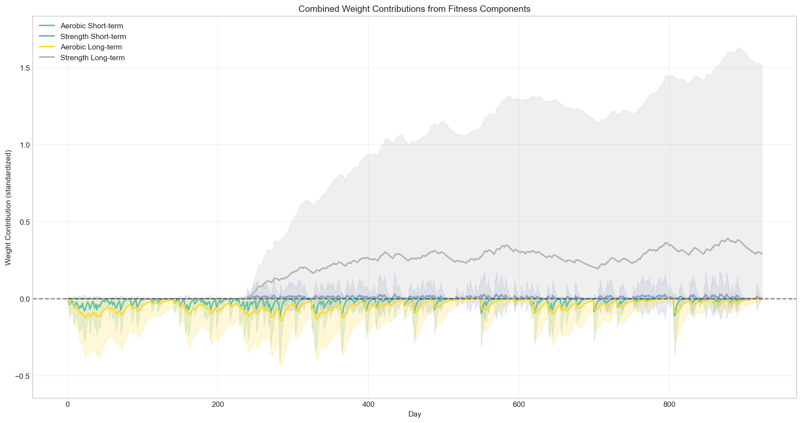

Four-Fitness State-Space Model: How workouts affect weight over time
Generated: 2026-02-28 21:17:32
Short-term (γ_a_short): -0.244 [95% CI: -0.558, 0.018]
Long-term (γ_a_long): -0.174 [95% CI: -0.342, 0.006]
Negative values indicate weight loss (fat reduction)
Short-term (γ_s_short): 0.117 [95% CI: -0.121, 0.411]
Long-term (γ_s_long): 0.237 [95% CI: -0.009, 0.501]
Positive values indicate weight gain (muscle growth)
Before examining fitness states and their contributions, here's the raw weight data that the model is trying to explain. This shows the actual weight measurements over time with workout patterns highlighted.

Top: Raw weight measurements over time. Bottom: Workout intensity patterns (aerobic in blue, strength in orange). Vertical lines show workout days.
The four-fitness model attempts to explain these weight fluctuations based on workout patterns shown below.
The model decomposes weight changes into:
By comparing the raw data above with the fitness contributions below, you can see how workouts map to weight changes.
These plots show the estimated fitness states for each component over time. Fitness states represent the body's "readiness" or "adaptation" level from each type of exercise.
Hover over points to see exact values. Use the legend to toggle visibility of components.
Interactive Plotly visualization showing posterior means and 95% credible intervals

Each subplot shows one fitness component with mean (solid line) and 95% CI (shaded)
Higher values indicate greater recent activity or accumulated fitness. The states evolve dynamically based on workout intensity and natural decay.
Key property: Fitness states represent additional adaptation from recent workouts. With no workouts, states decay toward 0 (baseline). States are constrained to be non-negative (≥ 0).
These plots show how each fitness component contributes to weight changes. The contribution is calculated as γ × fitness_state.
Positive contributions increase weight, negative contributions decrease weight. The red dashed line shows zero contribution.
Interactive visualization of weight contributions with 95% credible intervals

Each subplot shows weight contribution from one fitness component

All contributions combined, showing net effect on weight
The four-fitness state-space model includes:
Workout intensity is scaled to be non-negative (0 = no workout). Fitness states decay toward 0 with no workouts.
| Date range | 2023-07-12 to 2026-01-20 |
| Total days | 924 |
| Weight measurements | 147 |
| Aerobic workout days | 131 |
| Strength workout days | 136 |
| Mean weight | 135.3 lbs |
| Weight SD | 2.8 lbs |
| Parameter | Description | Mean | 95% CI Lower | 95% CI Upper | Interpretation |
|---|---|---|---|---|---|
| γ_a_short | Aerobic short-term effect | -0.244 | -0.558 | 0.018 | Negative = weight loss (dehydration) |
| γ_s_short | Strength short-term effect | 0.117 | -0.121 | 0.411 | Positive = weight gain (inflammation) |
| γ_a_long | Aerobic long-term effect | -0.174 | -0.342 | 0.006 | Negative = weight loss (fat reduction) |
| γ_s_long | Strength long-term effect | 0.237 | -0.009 | 0.501 | Positive = weight gain (muscle growth) |
Note: Beta parameter priors have been updated to exponential distributions (positive-only).